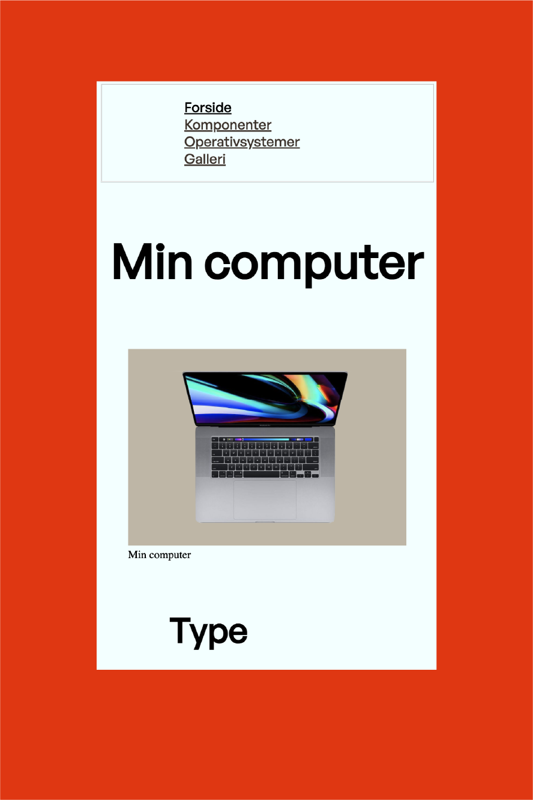

KIM HYE REE 김혜리
GRUNDLÆGGENDE WEB
Jeg lærte om grundlæggende html og css. Vi udforskede emner som responsivt design, herunder media queries, brug af grid og flexbox, håndtering af farver og ændring af typografien i css.
STUDIESTARTSPRØVEN
Jeg bestod prøven, men når jeg kigger tilbage på mit første website ser jeg en stor udvikling til i dag.

REFLEKSION
Jeg formåede at lave et website til computer og mobil, men på to forskellige sites. Jeg havde nok endnu ikke forstået hvordan media queries fungerede...